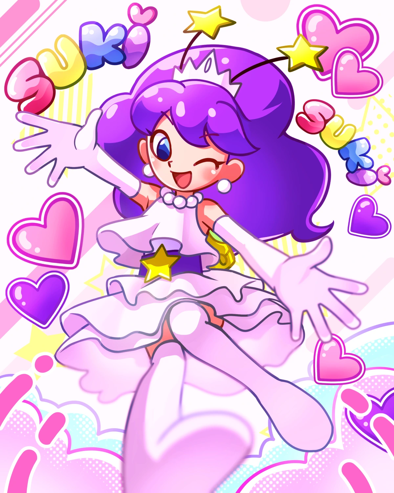
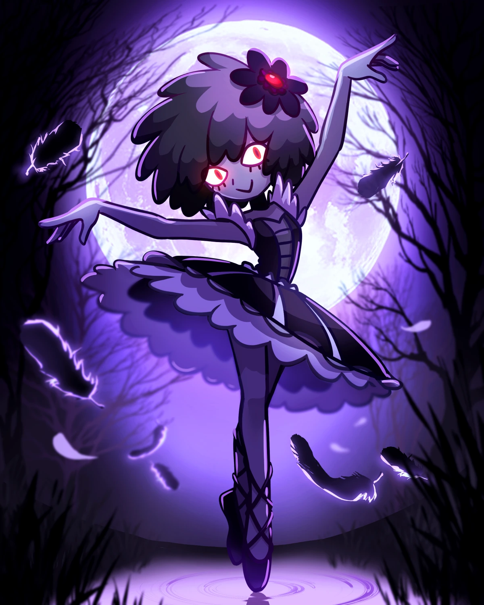
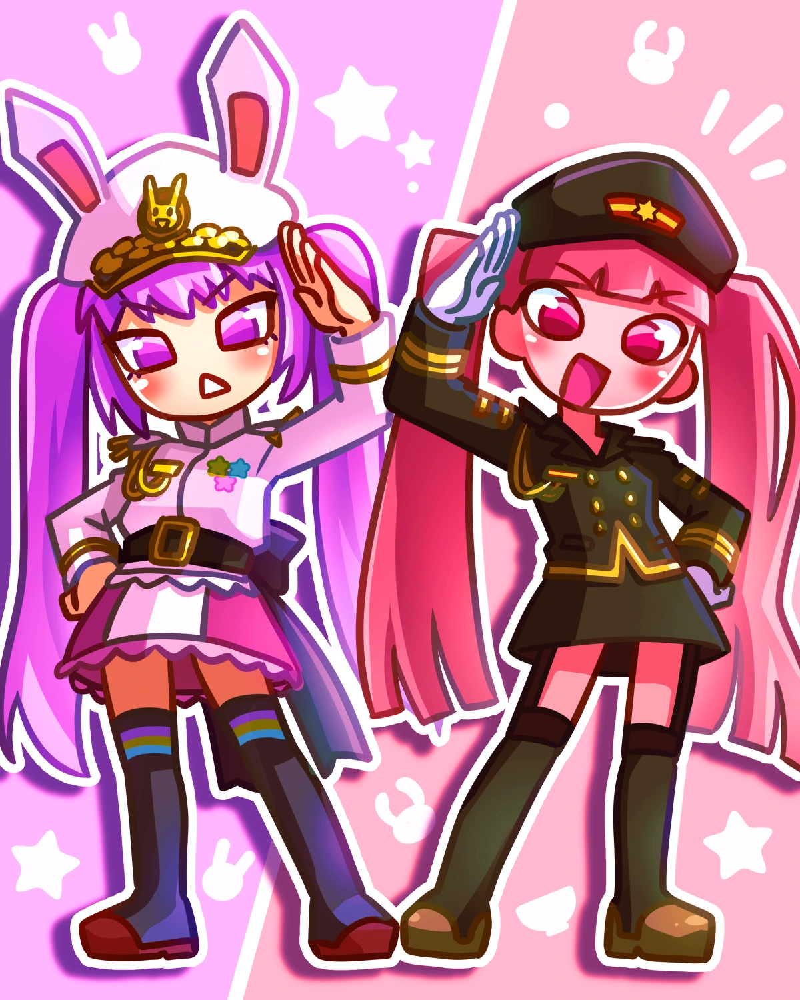
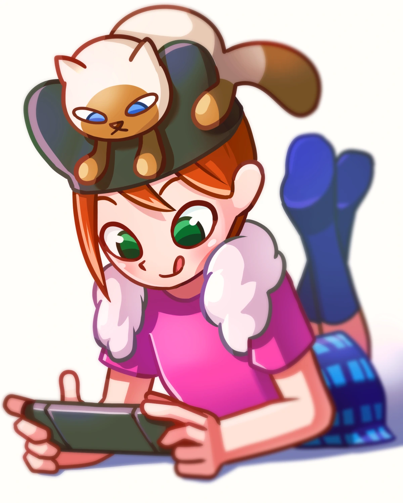
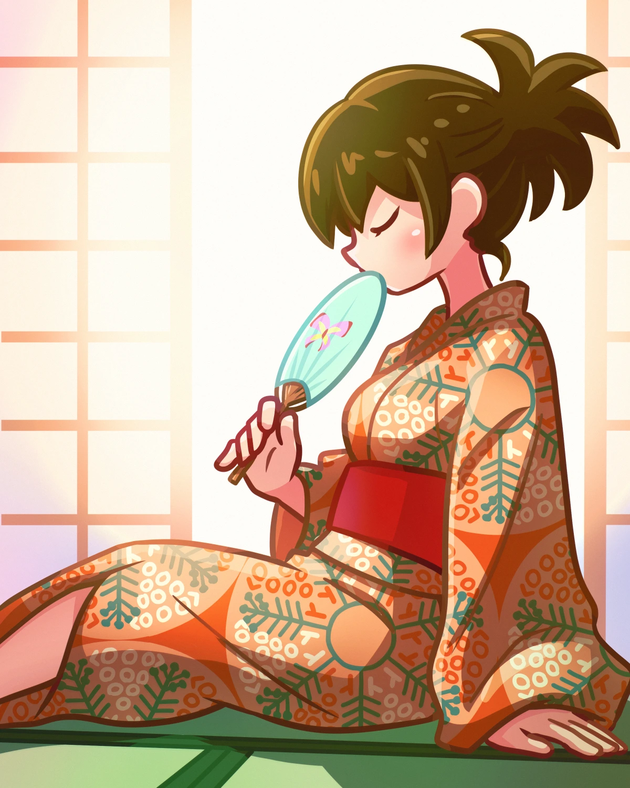
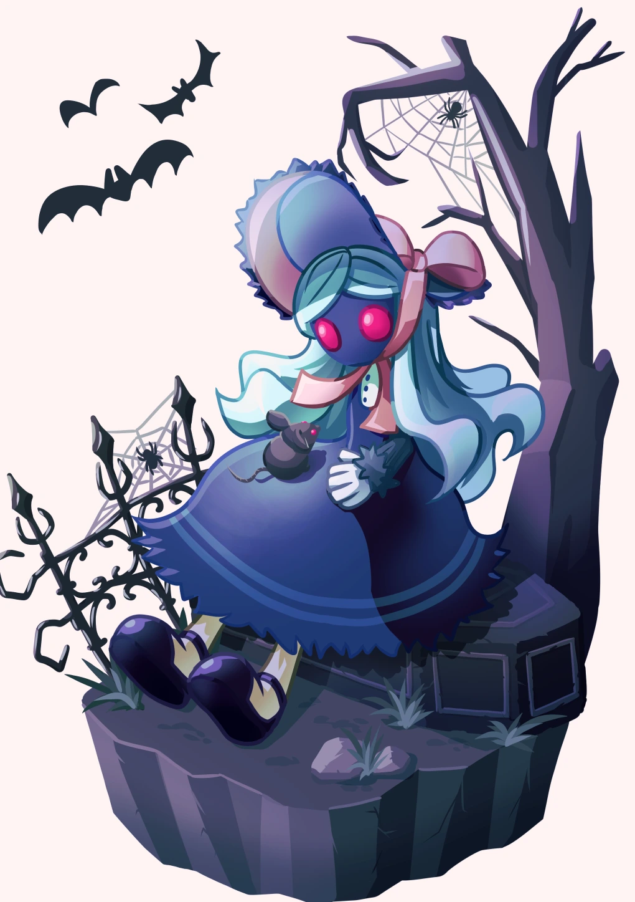
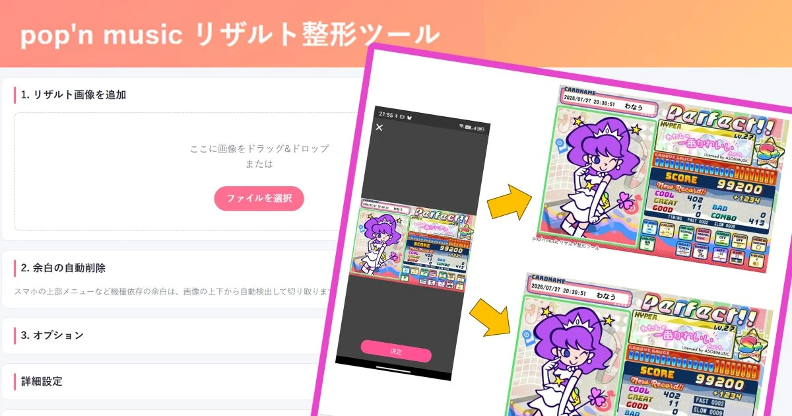
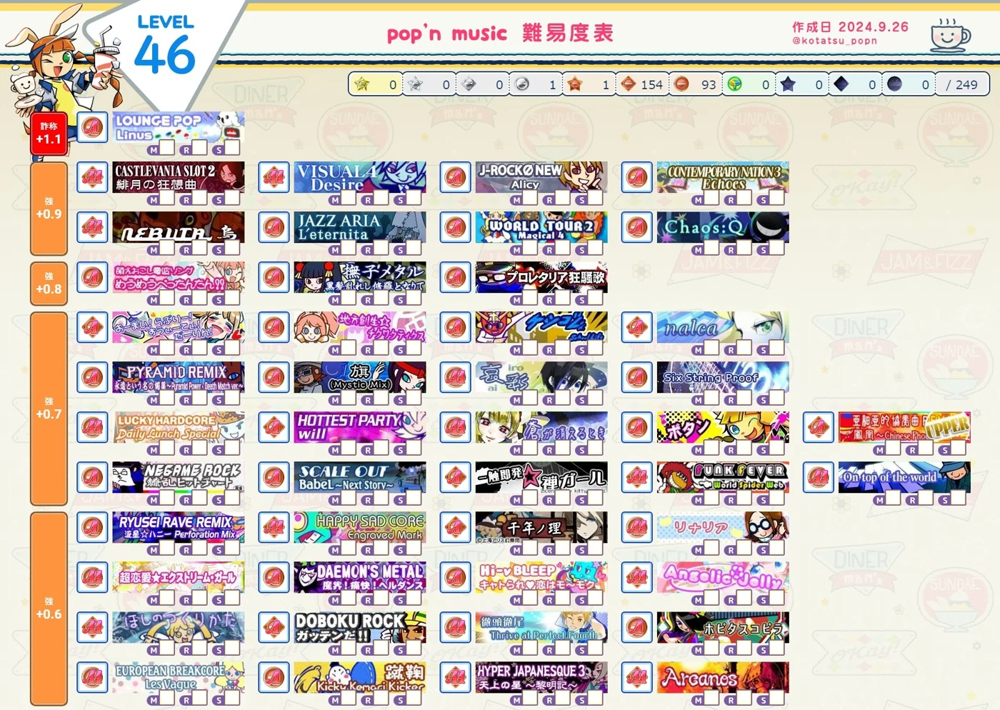
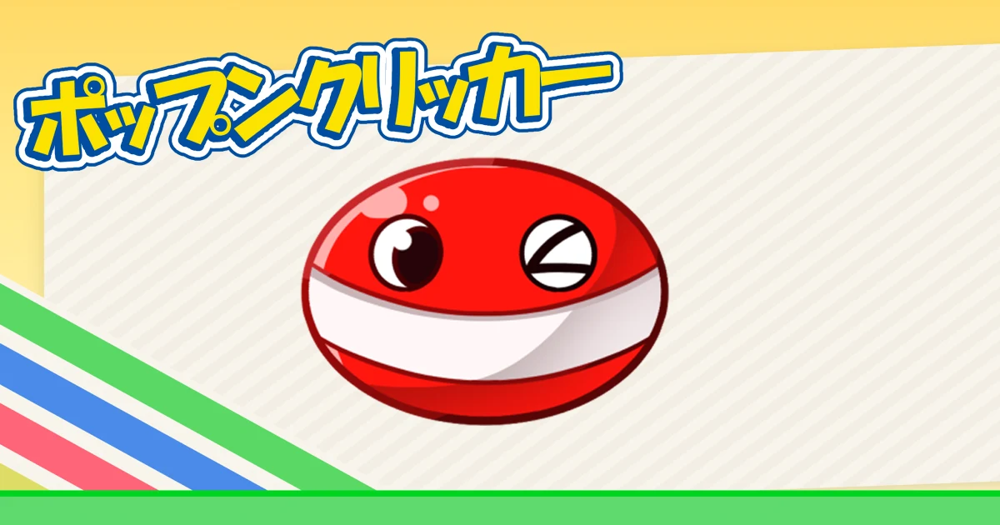
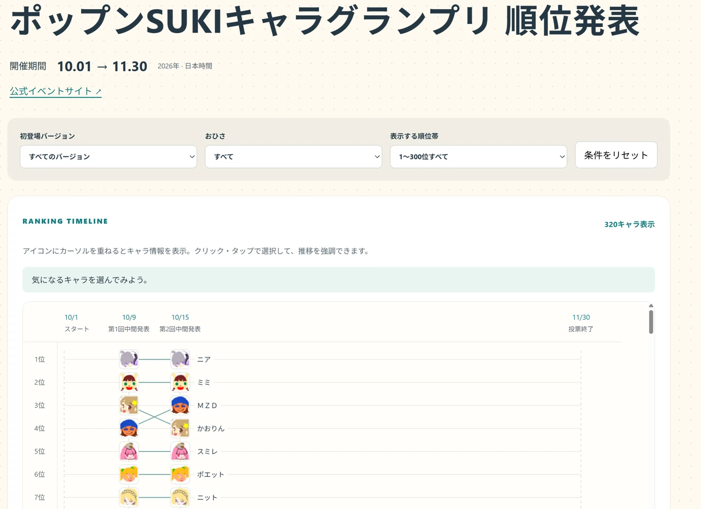

ルルちゃんかわいい01 / ILLUSTRATION
pop'n musicファンアートの一例
FAN ART ＋



FAN ART ＋

FAN ART ＋

FAN ART ＋

FAN ART ＋

FAN ART ＋ほかのイラストはこちらに。
pixivで見る ↗02 / TOOLS & GAMES
pop'n musicのツールやゲーム

TOOLpop'n music
pop'n music
リザルト整形ツール ↗
リザルトを整形するためのツール。
使い方は公開ページで紹介しています。

BOOKMARKLETpop'n music アーケード版
pop'n music アーケード版
情報管理ツール ↗
アーケード版の情報管理を助けるツール。
導入方法や詳細はリンク先へ。

GAME
pop'n clicker ↗
ブラウザで遊べるクリッカーゲーム
遊んでみる ↗
RANKINGポップンSUKIキャラグランプリ
ポップンSUKIキャラグランプリ
ランキング発表 ↗
SUKIキャラグランプリの順位をまとめたページ。
キャラクターのランキングをチェック。
03 / ELSEWHERE
各種リンク
見つけてくれて、ありがとうございます